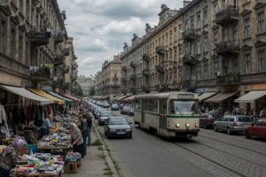
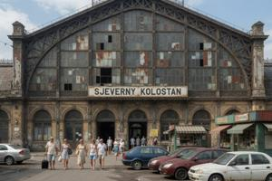
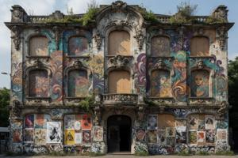

Fourth District of Vronovica
{kind=link}

The Fourth District (Czetvury okrug) of Vronovica occupies the northern sector between the Second and Third.
History overview
Character of this district was shaped in the Habsburg period by function rather than prestige: the railway terminus, the market, the slaughterhouse, the gasworks, the telephone exchange, and the fire brigade headquarters were all placed here, where land was cheap and the grander neighbourhoods did not have to look at them. The population that grew up to service this infrastructure — railway workers, market porters, tradespeople — was working-class, practically housed, and politically unremarkable.
The district's population was, through the Habsburg and republican periods, approximately equal in Zgurian and Deglian composition. When the civil war began in 1992, the Fourth District did not follow the Sockostur pattern. The old tenements were densely built and their residents intermixed at the level of individual staircases, with no ethnically homogeneous blocks around which armed formations could consolidate. No barricades were erected. Deglian families departed building by building over two to three years, under informal pressure and the cumulative effect of being the last Deglian household on a landing. The near-absence of open violence has made this demographic transformation easy to omit from accounts of the civil war — and from the international tribunals' dossiers on the city.
Most residential buildings are late nineteenth century and have received no maintenance since the 1950s at best; several are under structural observation orders that are periodically renewed without being acted upon. The district falls entirely within the Zgurian zone and has no UN administration presence.
Topography
The district's main axis is Railway Station Street (Kolostanska ulica, colloquially Stanka), running two kilometres east-west from Theatre Square in the Second District to Great Moravian Square in the Third. A tram line has operated this route since 1891; its cars are the oldest in continuous service on any Vronovica line, their continued operation reflecting the indispensability of the route rather than any investment in its upkeep.
In the 1990s this street became an open-air black market along its entire length, with almost everything on sale openly. Specialized segments acquired informal names from their principal merchandise: Rolex Lane, Kalashnikov Lane, Heroin Lane, and others. The situation has improved significantly since under pressure from the Zgurian authorities. The legendary Stanka remains a giant market where a €10 Rolex can still be easily found, but no longer a Kalashnikov or heroin; for those, a few metres off the street into the less public courtyards or alleys will suffice.
{kind=link}

The North Station (Sjeverny Kolostan), completed in 1885, is the principal passenger terminus for the northern and western rail approaches to Vronovica. The engineer Mixal Bogdanov modelled it on the Budapest Nyugati station: a large iron-and-glass arched train shed, the structural ironwork prefabricated in Vienna. The shed has not been significantly modified since construction; several glass panels shattered in shootouts have been replaced with sheet metal. The station serves lines connecting to Zgurian-controlled territory only; international rail has not operated since 1992.
The Indoor Market (Strjexovana Truzsnica), opened in 1888, is a two-wing iron-and-brick market hall supplying vegetables, meat, dairy, and dry goods to the northern city. The market has remained open through every change of administration and every period of scarcity.
{kind=link}

The Narcissus House (Sunovrotov Dom), an Art Nouveau building of 1907 set a quarter north of the Railway Station Street and bordering the Neutral Zone, began as a Gentlemen's Club — combined casino, cabaret, and luxury bordello. It survived every change of administration until 1945, when the Communists closed it and confiscated its interior decorations — among them a set of erotic paintings in the manner of Alfons Mucha — transferring them to Zeleny Dvor, Gowbka's private residence. The building was assigned to the Modern History Institute, which subsequently produced a twelve-volume biography of Gowbka and a three-volume history of the Second World War. The latter allotted one volume to the liberation of Upper Pannonia by UPPLA, one chapter to the Battle of Stalingrad, and one phrase to the Normandy landing. The institute was closed in 1990; its former staff spent the following years attempting to conceal this period of employment. After 1997 the building was occupied by an art commune and has since functioned as a vibrant creative space featuring independent exhibitions and performances. The Narcissus House also provides individual studios for digital content creators, working predominantly on the OnlyFans platform, which preserves a certain historical continuity.
In the nineteenth century, ethnic and religious minorities engaged in trade and crafts settled here in compact quarters: a Jewish quarter around the Old Synagogue, a German quarter with its Lutheran and Reformed churches, and a Greek quarter around the Orthodox church. Most of these communities have since emigrated, leaving behind little more than the old quarter names — though the synagogue and all three churches remain in use.
Categories: Vronovica, Districts of Vronovica